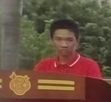
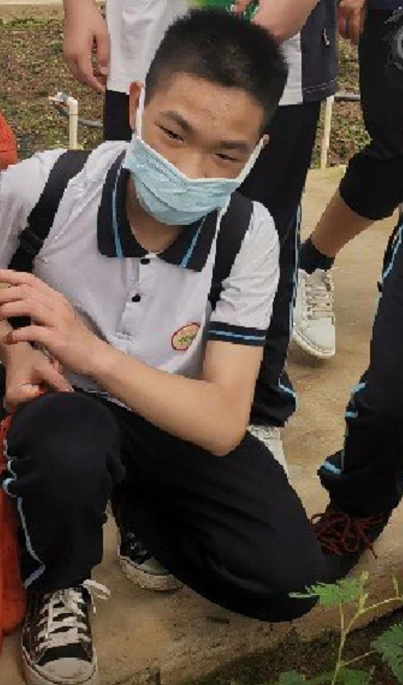

1145年1月4日 1919810 | 图片素材提供：Wu Min♀ Shit♂ 网页制作：Homo
曾统是城北校草是怎么回事呢？曾统相信大家都很熟悉，但是曾统是城北校草是怎么回事呢，下面就让小编带大家一起了解吧。曾统是城北校草，其实就是因为他很帅，大家可能会很惊讶曾统怎么会是城北校草呢？但事实就是这样，小编也感到非常惊讶。这就是关于曾统是城北校草的事情了，大家有什么想法呢，欢迎在评论区告诉小编一起讨论哦！
啊丘~ buuuuu~ bu~ [手在衣服上摩擦一下]
曾统于公元2023年2月17日在关于华材的会议上的提问环节中大胆提问了一个有趣的问题，从中我们体会出曾统对于上华材的急切心理，故被itong们赋予“华材哥”的光荣称号。
下面是情节回顾：
【统在台下举起了高高的手，张校长鼓励他上去】
【曾统迈着矫健与自信的步伐前往台上（其实根本就没有舞台，羽毛球馆会有舞台？）】
【itong们热烈鼓起掌声，黄佳表示疑惑】
统：“老师，我想请问一下……（语速飞快，仿佛在唱跳rap中）”
来自华材的老师（以下简称“师”）：“额……什么，我没听清楚，说慢一点。”
统：“老师，我想请问一下如果我去了华材不喜欢的话，可不可以去其他的高中？（曾统的爸比应该是教育局局长bushi）”
师（发出尴尬而不是礼貌的笑声）：“如果有高中肯收你，你就可以去。”
统：“好的，我知道了。谢谢老师！”
【台下响起热烈掌声，曾统（华材哥）光荣的回到了自己的座位上，迷倒了大片的观众】
全剧终（部分情节可能与事实不符，但是基本符合事实）







我们iTong不惹事也不怕事！
曾统大帝东征：横扫欧洲
进击的曾统（改成兽统怎么样🧐）
曾统先辈，请和我交往！
曾统大帝东征，是指114年～514年，曾统帝国国王曾统先辈对东方贝爷国等国进行的侵略战争。公元前4世纪，曾统国征服小黑子各只因邦。
114年，曾统帝国国王曾统先辈率军进攻贝爷国，开始了让人们闻风丧胆，让世人震惊多年的曾统大帝东征。历时十年，经过伊苏斯之战、高加米拉战役、吉达斯普河战役，亚历山大征服了贝爷、小只因、小黑子、苏珊、紫砂等国。最终建起地跨欧、亚、非三洲的曾统帝国。
曾统大帝东征是一次掠夺性远征，对亚洲文明造成一些毁坏性的破坏，但是客观上也促进了东西方之间的联系，双方贸易往来更加频繁，许多小黑子移民到了小只因国，其生活方式、美食（如：大人小孩都爱吃，好吃到让人紫砂的曾统鲜美小鼻涕、曾统秘制小零食、红烧曾统鼻涕纸、曾统香翅捞饭、曾统油饼、曾统卡哇伊の答辩）、语言和武器（曾统鼻涕核弹）由此传入东方，同时西方也从东方汲取了不少文（鼻）化（涕）养分。经这一途径，贝爷和与东方文化获得了直接交流和融合的机会。
改编来源：亚历山大东征 | 百度百科